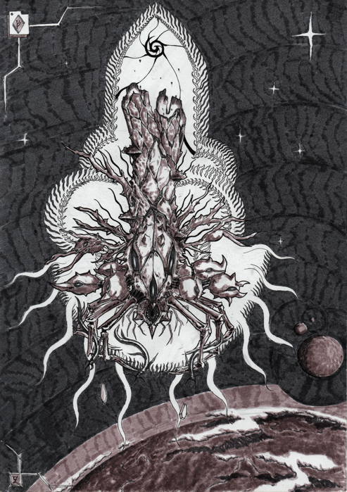
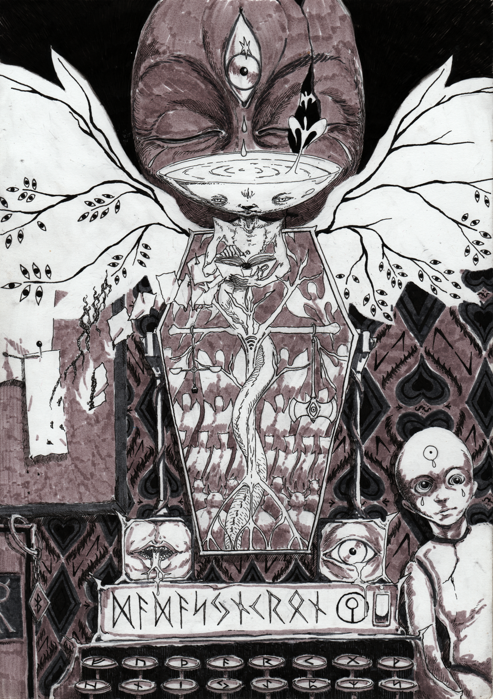
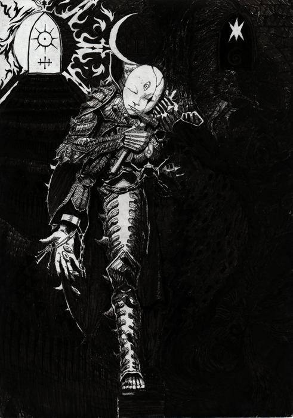

RUBRIKHUVUD ÖDESNATTEN
Allmänna NötterFATE
Fate Core (extern länk)
fate stunts
fate skills
-SABBAT
personalfil Rymdimperiet
UTGÅRD
Utgårdsmyt
Omständigheter i Utgård
Trolldom i Utgård
Utgårdspolitik
Den Utgårdska Avgrundens Fysik och Omständigheter
BORTOM UTGÅRD
Metafysiska Omständigheter


 

